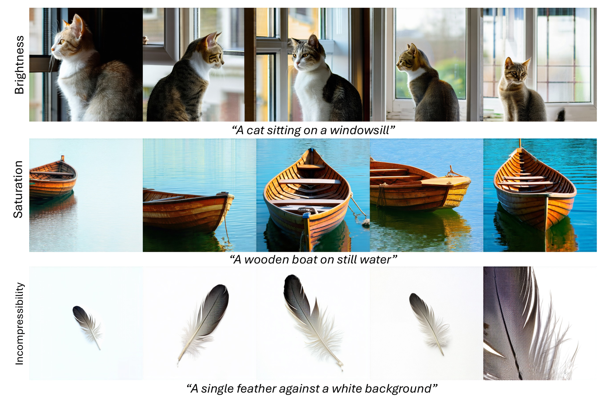
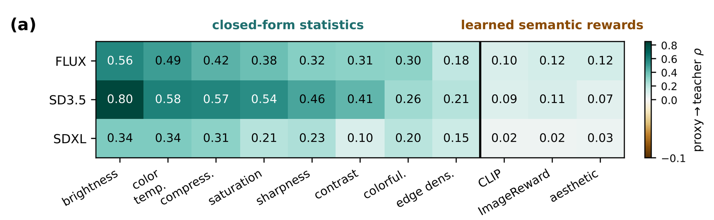
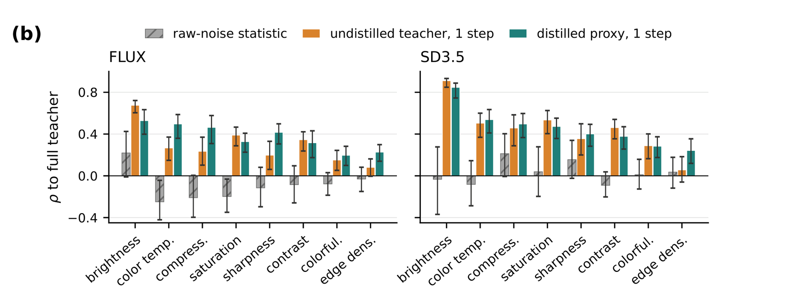
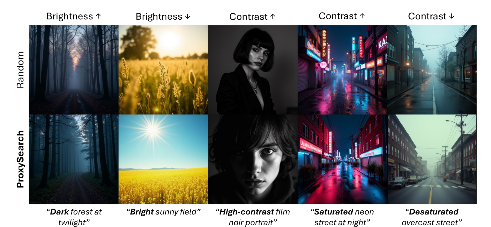
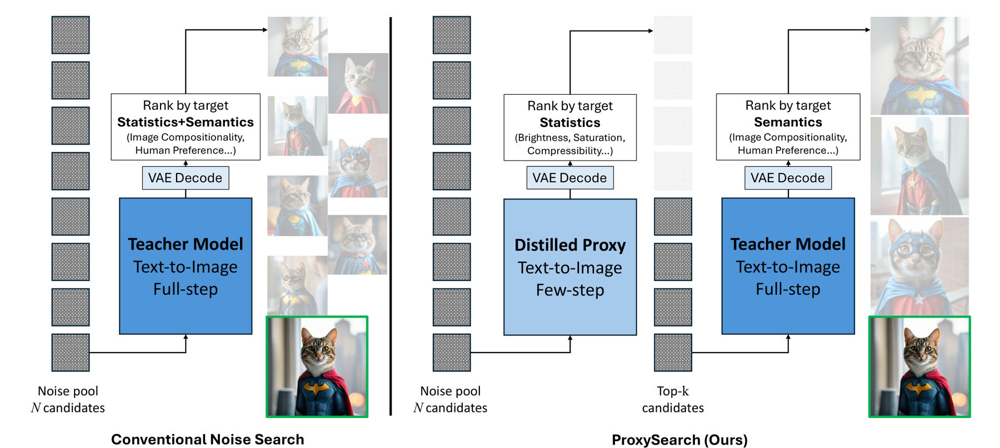
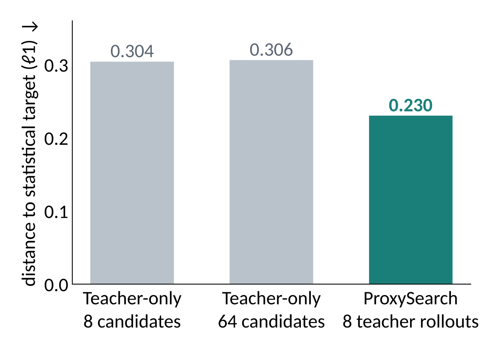
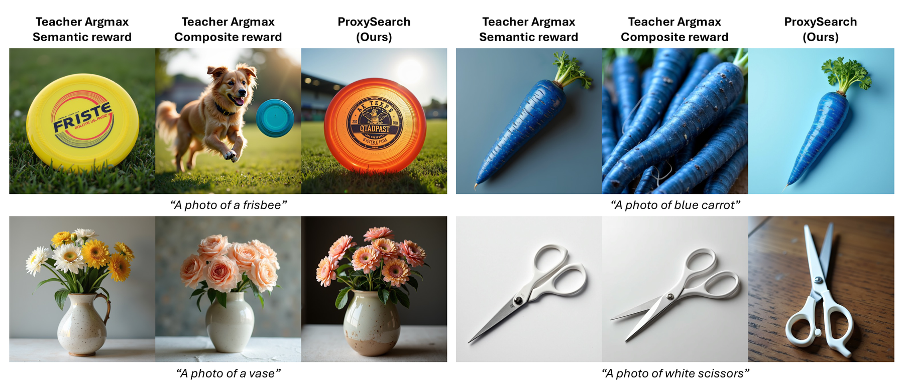

TL;DR. A distilled few-step diffusion model ranks candidate noises like its teacher on simple image statistics, but not on semantics. ProxySearch lets the 1-step proxy screen noises for the look you want, and lets the teacher pick the best content among the survivors.

5-Minute Overview
Abstract
Noise search at inference time improves text-to-image diffusion but requires many multi-step teacher rollouts per query. Distilled few-step models are now routinely released, yet their potential as proxies inside noise search is uncharacterized. We measure proxy–teacher rank agreement across three distillation regimes and three backbones (DiT, MMDiT, UNet) and find a sharp asymmetry. On our main pool, closed-form image statistics transfer from the proxy to the teacher (Spearman ρ up to 0.80), while learned semantic scorers do not (ρ ≤ 0.12). Paired null controls trace this rank to the first denoising step for coarse statistics and to distillation for finer ones. We use the asymmetry for noise search under a joint constraint: a semantic reward specifies content, and a numeric target specifies image statistics. In ProxySearch, the proxy filters candidates by statistical match in 1 step, and the teacher returns the survivor with the highest semantic reward. No weight trades one objective against the other. On FLUX-1024, ProxySearch tightens the statistical target by 21–23% at the same number of teacher trajectories, with no detected loss on the optimized reward.
Distilled Proxies Rank Statistics, Not Semantics
Most major text-to-image models ship with a distilled sibling (FLUX-schnell, SD3.5-Large-Turbo, SDXL-Turbo) that search pipelines use only as a faster generator. We ask whether it can also judge candidates: for each prompt, we render the same 32 noises with the 1-step proxy and the full teacher, score both with 11 verifiers, and measure how well the two rankings agree.

Where does the statistical rank come from?
Paired null controls on a shared noise pool show that the raw noise does not carry this rank. A single step of the undistilled teacher already ranks coarse statistics such as brightness, and distillation extends the agreement to finer ones such as sharpness and edge density. The distilled proxy is the only 1-step condition with significant rank agreement on all eight statistics.

Why Search for a Look?
Naming a look in the prompt does not set it. Even prompts that say “dark”, “bright” or “saturated” leave wide variance on the named axis across noises. Choosing the noise does change the look, which makes a numeric statistical target a natural second constraint for noise search.

Method
ProxySearch casts noise search as a joint constraint: a semantic reward specifies the content, and a numeric target τ (for example, brightness 0.72 and contrast 0.26) specifies image statistics. Each part is routed to the model that can rank it.

Render all N noises with the 1-step proxy and keep the K that best match the statistical target.
Render only the K survivors with the teacher and return the one with the highest semantic reward.
The method has two integer parameters, N and K, and no weight trading one objective against the other. At N = 64 and K = 8 on FLUX-1024, it runs the same 8 teacher trajectories as an 8-candidate teacher-only search and adds 64 proxy steps to the teacher's 400: 16% more denoising steps.
Results
Tighter statistics at matched teacher trajectories
On the full GenEval suite at FLUX-1024 (1,106 paired prompt–target cells), ProxySearch tightens the statistical ℓ1 distance to the target by 21–23% under three search rewards, and stays on par with teacher argmax on the reward it optimizes.
| Method | stat. ℓ1 ↓ | GenEval % ↑ | PickScore ↑ | HPSv2 ↑ | CLIP ↑ | ImageReward ↑ |
|---|---|---|---|---|---|---|
| GenEval-driven search | ||||||
| Teacher argmax (8 candidates) | 0.302 | 81.6 | 23.50 | 0.311 | 0.364 | 1.06 |
| ProxySearch (K = 8) | 0.233 | 82.5 | 23.52 | 0.312 | 0.365 | 1.12 |
| PickScore-driven search | ||||||
| Teacher argmax (8 candidates) | 0.297 | 78.9 | 24.14 | 0.322 | 0.379 | 1.25 |
| ProxySearch (K = 8) | 0.232 | 79.2 | 24.14 | 0.322 | 0.378 | 1.24 |
| HPSv2-driven search | ||||||
| Teacher argmax (8 candidates) | 0.296 | 79.0 | 23.91 | 0.329 | 0.377 | 1.27 |
| ProxySearch (K = 8) | 0.234 | 78.7 | 23.88 | 0.329 | 0.377 | 1.26 |
More teacher candidates do not substitute for the proxy
Giving teacher-only search the full 64-candidate pool leaves the statistical distance unchanged (0.304 → 0.306), while ProxySearch reaches 0.230 at the teacher cost of 8 candidates. The gain comes from screening on the statistic, not from pool size.
The tightening also replicates on other backbones, at a GenEval cost of 2–4 points relative to teacher argmax.

| Proxy → Teacher | Argmax GenEval | Ours GenEval | Argmax stat. ℓ1 | Ours stat. ℓ1 |
|---|---|---|---|---|
| SD3.5-Large-Turbo → SD3.5-Large | 92.0 | 88.0 | 0.204 | 0.120 |
| SDXL-Turbo → SDXL | 83.0 | 81.0 | 0.305 | 0.267 |
Qualitative Results

User Study
The preference arm uses pairs where ProxySearch shifted the statistic toward the requested look. Rates differ by look: 82.0–88.4% for dark, warm and cool, 70.1% for high sharpness, and at chance for bright/high-contrast and low sharpness.
BibTeX
@inproceedings{kim2026proxysearch,
title = {ProxySearch: Decoupled Inference-Time Scaling for Diffusion Models via Asymmetric Noise-Rank Transfer},
author = {Kim, Seungwook and Lee, Jongmin},
booktitle = {Advances in Neural Information Processing Systems (NeurIPS)},
year = {2026}
}